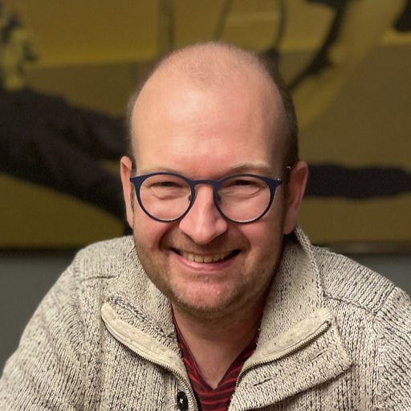
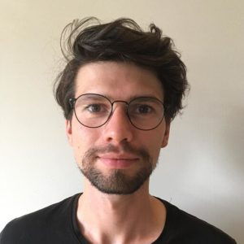

bioDSC core team
Our core team consists of three members; Frans van der Kloet, Martijn Wehrens and Misha Paauw.
Frans van der Kloet

Info
I obtained my BSc at the Noordelijke Hogeschool (NHL) in Leeuwarden majoring in analytical chemistry and got my MSc in Computational Chemistry at the Radboud University in Nijmegen. After several jobs in commercial companies I continued my academic career in 2009 and obtained my PhD at the Leiden University on quantitative aspects in/of high resolution mass spectrometry data in metabolomics in 2014. In that same year I started as a post-doc at the BDA group working on aspects of multi-block/view solutions like JIVE, DISCO and OnPLS and incorporating these types of methods in the prediction/classification of in-vivo transcriptome data. After another PD position at the Amsterdam Medical Center I started as a data scientist in the BDA group in 2019.
Current activities concern administration and implementation of a local Galaxy Server. Development of a database to store meta-data on samples/measurements (Metatree). Deployment of DL tools in the deconvolution of HRMS data and learning from DL models in general.
My main interest is in (pre)processing of large data-sets (with a preference for high resolution mass spectrometry data) and the development and implementation of data-analysis and pre-processing tools that is often further complicated because of these large data sizes.
Keywords:
Python, C++, C, Matlab, (R), Java, Galaxy(project), Metabolomics, MS, (multivariate) data analysis, (learning from) DL models.
Contact:
Group: Biosystems Data Analysis
Office: SP C2-205
Email: f.m.vanderkloet@uva.nl
Martijn Wehrens
After studying biology and chemistry in Nijmegen (BSc, RU), I obtained a MSc degree in theoretical chemistry at the University of Amsterdam, during which I focussed on simulations of biomolecular networks. Remaining in Amsterdam, I then obtained my PhD at AMOLF, where I worked on tracking single bacteria using time lapse microscopy to understand gene regulation at the single cell. After finishing my PhD, I moved to the Hubrecht Institute in Utrecht where I used RNA-sequencing to investigate the pathogenesis of heart disease as a postdoc.
At the bioDSC, I have fun writing scripts and lending my various computational and quantitative expertise to further understand all the amazing biological processes that occur in cells.
Keywords:
Image analysis, quantitative biology, RNA-seq and sequencing pipelines, data analysis in Python and R.
Contact:
Group: Molecular Cytology
Office: SP C2.267a
Email: m.wehrens@uva.nl
Misha Paauw

Info
After a broad training in biology during my BSc and MSc, ranging from ecology to bioinformatics to molecular plant biology, I started my PhD in the Molecular Plant Pathology group of the University of Amsterdam in 2019. In my PhD research, I worked on the molecular interactions between plants and a pathogenic bacterium, called Xanthomonas campestris pv. campestris (Xcc). By studying the ‘pangenome’ of Xcc, I reconstructed the evolutionary history of Xcc and pinpointed the genes required for the specific infection strategy of Xcc.
In my current role as data scientist I support molecular biologists in their data-heavy projects by providing individual consultancy and organizing workshops via the bioDSC.
Keywords:
Python, R, bash, data visualisation, comparative genomics, microbial genomics, molecular (plant) biology.
Contact:
Group: Plant Physiology, Green Life Sciences
Office: SP C2-207
Email: m.m.paauw@uva.nl